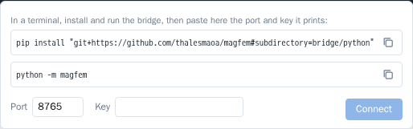

Local bridge (Python)
MagFEM runs in the browser, but it can be driven by scripts on your computer: change variables, solve, read results and rebuild the geometry while you watch the model change live. This enables parameter sweeps, optimization and couplings the app does not have (mechanics, thermal…).
Since a web page cannot accept connections, a small program on your machine acts as the bridge: the local bridge
(python -m magfem). The page connects to it over WebSocket, and scripts talk to it over HTTP.
script (Python, Matlab, Julia, curl…) ──HTTP──▶ bridge (127.0.0.1:8765) ◀──WebSocket── MagFEM page
Install
Requires Python 3.9 or newer; the package only uses the standard library.
pip install "git+https://github.com/thalesmaoa/magfem#subdirectory=bridge/python"
To update: pip install -U "git+https://github.com/thalesmaoa/magfem#subdirectory=bridge/python".
Connect
In a terminal, run the bridge. With
--keyyou choose the key (without it, a new key is generated every time):python -m magfem --key my-key
In the app, click Local script (status bar, bottom right), check the port (8765) and paste the key. The app remembers the last port and key.

The terminal reports that the page connected and opens the
magfem>console.
The terminal console
With the page connected, python -m magfem becomes a console tied to the app, like the web console:
MagFEM bridge 1.0.3 em http://127.0.0.1:8765
No app: clique em 'Script local', porta 8765, chave: my-key
Esperando a página conectar… (Ctrl+C encerra)
● Página do MagFEM conectada. Digite comandos do console (help() lista; Ctrl+D sai).
Scripts em outro terminal: mf = magfem.connect(key="my-key")
magfem> g.circle((0, 0), r=5)
"c4"
(The bridge messages are in Portuguese for now.)
Tab completes commands, ids and variables (the suggestions come from the page);
↑ repeats commands; Ctrl+D leaves; Ctrl+C stops the bridge;
the prompt only shows while the page is connected; if it drops, the console waits for it to reconnect;
commands sent by scripts show up tagged
[script].
Use --no-console for the bridge alone, without the console.
Python scripts
With the bridge running in one terminal, a script in another terminal connects with the same key:
import magfem
mf = magfem.connect(key="my-key") # waits for the page to connect
mf.set_var("I", "5") # project variable
mf.solve() # meshes if needed, solves and waits
print(mf.result("Coil_L")) # number of a result variable
print(mf.results()) # {name: (value, unit)}
t, i = mf.series("Coil_I") # transient: curve over time
mf.run('g.circle((0, 0), r=5)') # any console line (or several, separated by \n)
Without a bridge already running, magfem.connect() starts one inside the script itself and prints the port and key.
Method |
Does |
|---|---|
|
connects (or starts the bridge) and waits for the page |
|
runs console lines; returns the value of the last one |
|
|
|
solves and waits for it to finish |
|
value of a result variable |
|
|
|
|
|
|
Errors
A command that fails in the app raises magfem.BridgeError with the message and the failing line. With timeout,
waiting for the page also ends in this error:
import magfem
try:
mf = magfem.connect(key="my-key", timeout=60)
mf.run("g.circle((0, 0), r=5)")
mf.solve()
print(mf.result("Fx"))
except magfem.BridgeError as e:
print("MagFEM:", e)
s.solve() and m.generate() finish before the next line starts, so a script can chain commands without waiting by
hand.
Security
The bridge only listens on
127.0.0.1(your machine).It only accepts WebSocket connections from MagFEM pages (thalesmaia.com or localhost).
Every HTTP command needs the key in the
X-MagFEM-Keyheader. There is no empty key: without one, any program on your machine, or a malicious page open in the browser, could send commands.
Plain HTTP
Any language that speaks HTTP can use the bridge. See Matlab, Julia and HTTP.